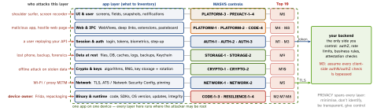

security · folio
In one line: MASVS v2.1.0 (Jan 2024) is the standard: 24 controls in 8 groups saying what a secure app does. MASWE catalogues how it fails (78 weaknesses, v1.0.0 Aug 2026), MASTG says how to test, and a MAS profile (L1 · L2 · R · P) says how much to test. The Mobile Top 10 (2024) is an awareness list of risks, not a checklist.
Download PDF Print view LaTeX source


The MAS family
- MASVS = what (controls) → MASWE = how it fails (weakness IDs
MASWE-0001…0078) → MASTG = how to test (tests, techniques, tools, demos, per iOS/Android). - v2.0.0 (Apr 2023) rewrote v1: short, platform-agnostic controls and no verification levels in the standard. v2.1.0 (Jan 2024) added only MASVS-PRIVACY (+ CycloneDX format).
- Levels became MAS testing profiles (2026: own “MAS Profiles” section): MAS-L1 baseline for every app · MAS-L2 defence in depth for sensitive data (banking, health) · MAS-R resilience against reverse engineering + tampering, on top of L1/L2 · MAS-P privacy. OWASP prefers a profile cut from your threat model over the defaults.
- Same control, different depth per profile: pinning (NETWORK-2) or anti-debugging (RESILIENCE-4) are L2 / R territory.
The 24 controls (“The app …”, condensed)
| STORAGE | 1 stores sensitive data securely · 2 prevents its leakage |
| CRYPTO | 1 current strong crypto, used per best practice · 2 key management |
| AUTH | 1 secure authN/authZ protocols · 2 local auth per platform practice · 3 extra auth for sensitive operations |
| NETWORK | 1 secures all traffic · 2 identity pinning for endpoints under the developer’s control |
| PLATFORM | 1 IPC used securely · 2 WebViews used securely · 3 UI used securely |
| CODE | 1 requires an up-to-date platform · 2 can enforce updates · 3 no components with known vulns · 4 validates + sanitises untrusted input |
| RESILIENCE | 1 validates platform integrity · 2 anti-tampering · 3 anti-static analysis · 4 anti-dynamic analysis |
| PRIVACY | 1 minimises access · 2 prevents identification of the user · 3 transparent · 4 user control |
Example — map one feature (“pay a friend”, profile L2 + R)
| inventory item | control → what you verify |
|---|---|
| refresh token | STORAGE-1: Keychain, ThisDeviceOnly; AUTH-1: server revokes |
| payee list cache | STORAGE-2: not in backups, logs, Cache.db |
pay://send?to= link | PLATFORM-1 + CODE-4: parse, allowlist, confirm screen |
| T&C WebView | PLATFORM-2: no bridge, HTTPS only, own domain |
| payment API | NETWORK-1/2: ATS on, pinned; AUTH-3: biometric-bound key signs |
| cloned / hooked app | RESILIENCE-1/2 as signals; server checks attestation |
OWASP Mobile Top 10 — 2024 (final)
| M1 | Improper Credential Usage | hard-coded keys, creds stored/sent badly |
| M2 | Inadequate Supply Chain Security | bad SDKs, build + signing compromise |
| M3 | Insecure Authentication / Authorization | client-side checks, spoofable IDs |
| M4 | Insufficient Input/Output Validation | injection via links, WebViews, IPC |
| M5 | Insecure Communication | cleartext, broken cert validation |
| M6 | Inadequate Privacy Controls | PII over-collected, leaked, undeletable |
| M7 | Insufficient Binary Protections | reverse engineering, tampering, repacks |
| M8 | Security Misconfiguration | exported components, debug flags, backups |
| M9 | Insecure Data Storage | plaintext files, prefs, DB, logs, caches |
| M10 | Insufficient Cryptography | weak algorithms, ECB, static IV, DIY |
vs 2016: credentials, supply chain, input/output validation and privacy are new headline risks; 2016’s separate authentication and authorization merged into M3. Top 10 = what to talk about; MASVS = what to verify.
How to run the review
- Inventory: data, entry points (links, IPC, WebViews, push), SDKs, endpoints.
- Threat model → profile: L1 always; L2 sensitive data; +R if the client itself holds value; +P personal data.
- Map items to controls; run that profile’s MASTG tests on both platforms.
- Report MASWE-tagged findings; fix server-side first; re-test.
Traps
- “We’re MASVS-L2 compliant” — v2 has no levels; say “MASVS v2.1, tested against the MAS-L2 profile”.
- The Top 10 is not a standard you “comply” with; audits use MASVS/MASTG.
- RESILIENCE never replaces L1/L2: an obfuscated app that logs tokens is still M9.
- NETWORK-2 covers endpoints you control — not an analytics SDK’s host.
- M1 is not “weak passwords”: it is secrets in the client — anything shipped is public.
Remember
MASVS says what, MASWE how it fails, MASTG how to test, the profile how much, the Top 10 what to talk about.